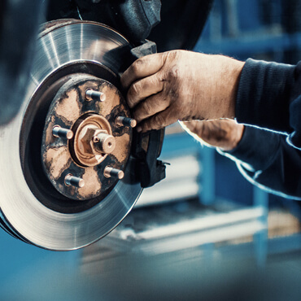

Taller mecánico automotriz multimarca. Mantenciones, frenos, ajustes de motor, culatas y filtro de partículas.
Cotiza por WhatsAppLlamarMantención periódica para vehículos de todas las marcas.
Servicio de frenos completo.
Ajustes de motor y trabajos en culatas.
Limpieza de filtro de partículas.
Diagnóstico con scanner, también a domicilio.
Carga de aire acondicionado automotriz.

Av. Mapocho 2743, Santiago
Lunes a viernes de 9:00 a 18:00
Sábado de 9:00 a 14:00